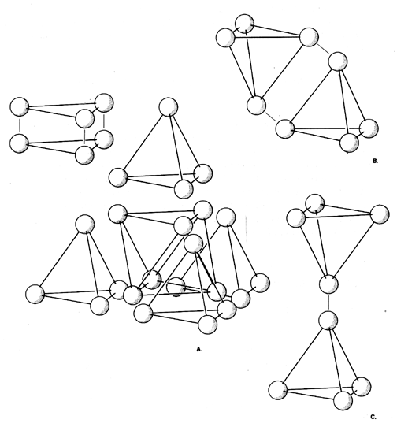

|  |
| Fig. 987.081 Trivalent Bonding of Vertexial Spheres Form Rigids: At C: Gases are monovalent, single- bonded, omniflexible, inadequate-interattraction, separatist, compressible. At B: Liquids are bivalent, double-bonded, hinged, flexible, viscous integrity. At A: Rigids are trivalent, triple-bonded, rigid, highest tension coherence. |